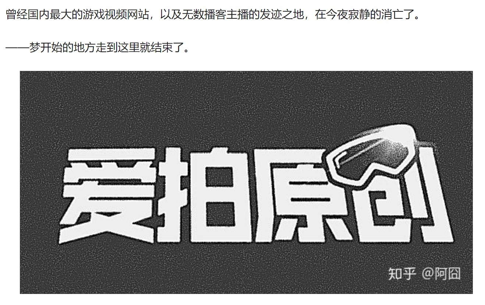

今天来聊聊爱拍原创这个网站，2009年，爱拍原创为当时的中国互联网注入了新的血液。作为国内早期原创视频网站，爱拍在当时是一个重量级网站。我在2012年的时候被同学安利接触到了这个网站，那个时候的爱拍正处于大紫大红的阶段。
当时在爱拍主要看CF的视频，小学6年级的时候开始看MC的攻略。后来光是看已经不过瘾了，得拍大师傻瓜式操作的优势，我第一次接触到了视频的剪辑，自己录视频自己剪辑，虽然质量不怎么样，但是还是体会到了要做好一个原创视频作者有多难。我记得自己单视频播放量最高的一个是12W，内容是演示了Minecraft的矿物追踪Mod。。。。我还有录上自己声音的游戏实况~~（超羞耻），陆陆续续两年下来我拍过CF，拍过MC，甚至还拍过洛克王国的PVP。我也关注了很多自己觉得很优秀的主播。按照时间顺序来的话他们是@爱拍脑残（CF技术，搞笑型主播，小学的时候经常看他的视频，是同学安利给我的233） @少东D陈子豪（好像是这个ID吧？？虽然有很多人喷他，但是别人CF打的确实不错啊233，看他的生化视频就是一个爽字） @夏佐（好像也是这个ID吧？？ 同样CF技术非常的厉害，后来好像因为合同什么的离开了爱拍） @小生爱畅（超级喜欢这个主播，他的视频和B站的@少年PI 是同一个类型的，而且都喜欢超长时长不分P，但是我每次看PI的视频都会打瞌睡233，所以就经常看小生的啦~~，攻略型硬核玩家！！后来可能是因为不赚钱的原因逐渐淡出了爱拍，转向虎牙直播，现在虎牙上也没有继续播了）@卡卡（CF生化救世主模式压力打法骨灰级玩家，解说方式很独特，声音好听，记得他自我介绍过自己的职业是律师，后来因为工作原因逐渐淡出了爱拍）。
爱拍可以说承载了我童年的一部分吧哈哈，第一次完成了视频录制剪辑的那种想要宣告全世界的成就感，第一次收到评论收到鲜花的那种无法抑制发自内心的喜悦感，我相信肯定有很多人有过和我一样的感受。直到现在，爱拍发出公告说爱拍原创停止服务的时候，我才发现这份感受原来是这么的宝贵。至于说有多宝贵呢？那时候我家电脑的配置是英特尔赛扬E3000，没有几个家庭PC会选择这个U，它的集成显卡在娱乐大师上跑分，鲁大师直接不给跑，因为压根就无法进入跑分环境。。光是这一点我的游戏体验就不是很好，而且还要录制视频。在爱拍上留下的20个视频，完全是靠着自己对游戏的热爱完成的。或许就是用爱发电吧哈哈哈？？？
我离开爱拍是因为bilibili，在B站我看到了一个更好的运营模式，更良心的收费方式，相反，我对爱拍恶心的吃相感到了厌恶，对这个公司不求上进竭泽而渔的做法感到了失望，我都不记得我在各个社交平台上抨击了爱拍多少次了，对他们架设Minecraft非正版验证服务器并且公然收费，我甚至还发过邮件提醒侵权，试图唤醒他们的良知。现在想想我是真的可爱。我以前经常说“爱拍这个破站吃枣药丸”，现在真的完了，然后我居然开始怀念而且还写了这篇文章？？？
爱拍和其他的知名游戏资讯网站比如17173是一样的，以游戏为主，为每个火爆的游戏开设专区，通过自己的编辑和玩家来一起完善，只不过爱拍更加复杂罢了，选择了视频网站的方向。这也奠定了爱拍难以转型的问题。这几年随着这些资讯网站的衰落加上爱拍在移动端市场的失败，爱拍失去了视频站的地位也失去了资讯站的地位。当然也不是说爱拍的失败是注定的，爱拍还是有很多机会转型或者提升自己的服务质量吸引更多的用户和优质原创者。只不过是他们自己没有把握好而已。总之天下没有不散的宴席，如果有机会的话我还想再登一下自己的账号，看看自己用幼稚的声音语无伦次的解说，再去看看曾经关注的一些主播的空间，看看那些曾经给了我欢乐的视频······感谢陪伴，后会无期。